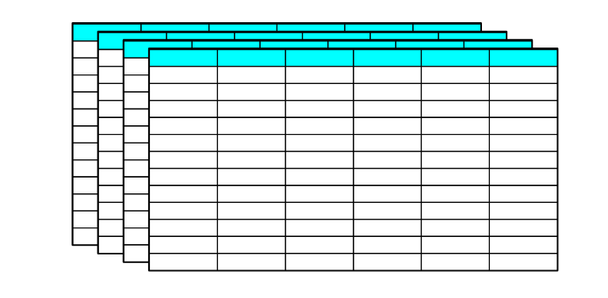

One of the things that can make databases awkward at first, especially in Python, is the terminology. It’s based on some old school concepts and technologies. A very long time ago bits were carved into stone tablets with magnetic chisels. These tablets were circular in shape and stacked on top of each other, resulting in something shaped like a can, or a drum.

And this is why databases are always represented as cylinders in architecture diagrams, like this:

But this doesn't tell us anything about how to actually work with them. For that it's helpful to dig into how they organize data.
Databases are clumsy Spreadsheets
If it’s helpful, you can think of databases as spreadsheets. This trick only works for relational databases, but thankfully, they are the most common type by a wide margin. Just like a spreadsheet can contain a lot of separate pages or sheets, a database can contain many different tables. And just as in each spreadsheet page, data in a table is arranged into rows and columns. Each individual column is a uniform type of thing from top to bottom, like a date or an age or a name. Each row is typically some kind of object or entity, like a customer or a company, or an observation, or an experimental apparatus. Each column captures a different attribute of the object in that row.

Spreadsheet or Database? Who can say?
Since they are so similar, you might be tempted to ask "Aren’t spreadsheets and databases basically the same thing?" If you ask this question on the Internet, you’re guaranteed to get some strongly opinionated answers. While they share similar patterns for organizing data, there are some important differences between them which make them fit for very different types of jobs. It mostly boils down to scale. If you are one person, manually entering and modifying a hundred rows of data with ten columns each, a spreadsheet is the perfect tool. You can see everything in a glance and change it in an intuitive way. But if you have a hundred people, plus a handful of automated processes, reading and writing data to tables with a hundred columns in a million rows, you absolutely do not want to try doing that in a spreadsheet. If you ask nicely, the opinionated respondents on the Internet will share horror stories with you of organizations that have tried to do exactly this.
Quirky Database Concepts
OK, so databases are big. But that only goes partway to explaining why they are so clunky. To understand the rest we have to talk about brown M&Ms. There is an urban legend that the (now classic) rock band Van Halen had in their contract a clause that the dressing rooms were to be stocked with a bowl full of M&Ms, and that all the brown ones had to be removed. This inspired all kinds of eye rolling about hair band divas.

Funny enough the reality was not too far off. Van Halen had, for that time, an unusual amount of equipment and effects that went into their shows. The success of the show as well as the safety of the band and audience depended on the mechanical and electrical specifications being met. The contract that included all of this was famously large, and there was a justifiable fear that venues would not do a detailed reading. The brown M&Ms clause is included as a check on this. It was a visible detail that helped indicate whether the invisible details had all been attended to. (This is a super fun read on Snopes.com.)
Databases are a bit like this. It’s true, they could be designed with a more intuitive interface, and there are some tools that attempt this, but the ungainliness of the interface serves at least partially as a check that the database user is thinking about it the right way.
Connections
connection = sqlite3.connect("my_first.db")
These original databases were pieces of silicon furniture far too heavy and expensive to lug around so they sat off in an air-conditioned room somewhere. To get at the data you wanted to use you had to first connect to it.
The notion of having to establish a connection is a bit weird since our computers now are perpetually connected to everything. It’s doubly awkward if you are hosting a database in memory on your own local machine. What are you even connecting to? But for better or worse, "connection" is database speak for "open the channel, spin it up, start talking, ready to go". I like to think of it as a big drawbridge that’s lowered to connect your machine on one side to a fortified castle, holding the precious database on the other. Whether it sits on your hard drive, your RAM, your office server down the hall, or AWS's us-east-1 in Virginia, connection means that there is now a pathway for you to get to the database.
Cursors
cursor = connection.cursor()
Having a bridge in place doesn’t allow you to do anything useful all on its own. You are still stuck on one side and the data is on the other. And to complicate matters you’re not allowed to cross the bridge, and the data is stored vaults in the castle's catacombs that can run for miles. To do anything useful, you have to employ a cursor. In my imagination, a cursor is a small, extremely fast robot, and they are very good at following instructions. For instance, you can tell the cursor to cross the bridge, roam the the catacombs, and pull all of the data from a table for a particular date. The cursor robot will dutifully speed across the bridge, race through the catacombs, find all the relevant pieces of data, make photocopies of them, and stack them in a neat pile on the far side of the drawbridge.
At this point, the cursor has organized what you asked for
via an execute() command, but the data is still
sitting on the other side of the moat. Luckily, you can also
instruct your cursor to fetchone() piece data for you,
and it will
race back-and-forth across the bridge at a lightning
speed bringing you the data element off the top of the stack.
There’s also a shortcut
way to ask your cursor robot to get you a certain number of these,
fetchmany(), or to just grab all of them,
however many there might be, fetchall().
The notion of a cursor will be familiar to you if you’ve ever had to deal with file pointers. These keep track explicitly of what location in a file you are reading from or writing to. Tracking a file pointer does result in a more complex mental model, and in higher level languages the default toolsets abstract it away so you don’t have to keep track of it in your head. But in databases it’s still alive and well.
The idea of an explicit cursor comes in handy with databases where there can be many people writing to or reading from a table at any given time. We can think of an army of small robots, crawling through the catacombs, carrying out the instructions of their users on the other side of the bridge. This lets us reason explicitly about what to do when two robots want to read the same piece of information at the same time. Or even trickier, when two robots both want to change the same piece of information at the same time. Or hairier still, when one robot has made a copy of a piece of data, and then another robot comes behind them and writes a new value to it. This topic is known as concurrency and different database designs handle concurrency differently. They all are appropriate for different use cases and come with their trade-offs. But the important part is that having cursors forces us to think about concurrency a little more explicitly.
SQL
cursor.execute("SELECT * FROM breakfast")
SQL is the language of the cursor robots (pronounced "sequel" by two-thirds of LinkedIn and "ess-kew-ell" by the other third.) It reads like instructions written by Yoda—backwards and out of order. But luckily the order is consistent and if you have a cheat sheet you can get it right every time. If you are new to SQL or want to up your your game there are some fantastic learning resources to choose from, and a DuckDuckGo search of " sql cheat sheet" gets you two months of SQL course knowledge printable on an A4/letter-sized piece of paper.
Once you get comfortable using SQL to talk to the cursor-robots you can get them to do astounding things. I myself have been using SQL for close to 10 years, but when I see a real SQL artisan at work I am in awe. They can sweet talk the robots into gathering the exact 83,003 items they need out of billions, light them on fire, juggle them in a figure-eight, and weave them into a poncho. SQL may be far from natural for humans, but it is custom built for finding and manipulating items in tables. If you can shoehorn your data manipulation into a SQL statement, SQL will usually be able to do it a lot faster than you can. Let the cursor-robots do your dirty work.
Taking things to the next level
If all this isn't enough to scare you off then, congratulations! Your relational database relationship has graduated to the status of second date. Now go make beautiful tables together.